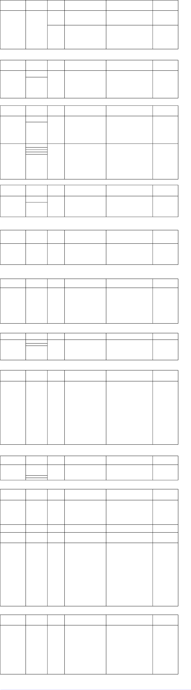

Analgésico, Antipirético;
Inibidor da agregação
plaquetária
Carvão Ativado
(NÃO PADRÃO)
Inibe a absorção gastrintestinal por adsorver substâncias
na ampla superfície ativada do carvão.
Administrar glicose para
pacientes com estado mental
alterado.
Bicarbonato de sódio
injetável
(PADRÃO)
Bicarbonato de sódio é um agente tamponante que reage
com íons de hidrogênio (prótons) para corrigir acidemia e
acidose metabólica associada a intoxicação, promove a
eliminação de certos fármacos ácidos como por exemplo
o ácido acetilsalicílico por alcalinização urinária;
Bicarbonato de sódio 1 a 2mEq/kg (bolus) seguido de
manutenção de 100 a 150mEq.
Antidepressivos Triciclicos
Solução Lipídica
20% (NÃO
PADRÃO)
Modelo proposto: solução lipídica criaria camada
lipídica intravascular e levaria à extração por difusão
dos metabólitos tóxicos, evitando seus efeitos sobre
sistema nervoso central e cardiovascular.
Dose em bolus: 1,5 mL/Kg.
Administrado por via
intravenosa. Pode ser repetido,
até 3 doses (se em parada
cardiorrespiratória).
Antagonista competitivo dos receptores
benzodiazepínicos no sistema nervoso central.
Dose: 0,01 mg/Kg até 0,2 mg em bolus intravenoso.
Não utilizar em caso de
intoxicações mistas com pró-
convulsivantes (inclusive por
antidepressivos tricíclicos) ou
em usuários crônicos de
álcool/benzodiazepínico. Risco
de precipitar arritmias e
convulsões.
Ativação do sistema adenilciclase independente dos
receptores beta aumentando a contratitilidade
miocárdica
Dose: bolus lento 0,05 mg/Kg até 5 mg, podendo ser
repetido após 10 minutos. Se resposta clínica, seguir de
infusão 70 mcg/Kg/h (máximo 5 mg/h). Diluir em 100 mL
SF0,9%.
Solução com estabilidade curta,
não manter muito tempo após
diluição.
Bloqueadores de canal de cálcio
Gluconato de Cálcio
(PADRÃO)
Aumenta o influxo de cálcio, revertendo o efeito
inotrópico negativo.
Dose: 0,6 mL/Kg de gluconato de cálcio a 10% por via
intravenosa, dose máxima de 60 mL.
Pode ser repetido a cada 10 a 20
minutos por até 4 vezes.
Vitamina K –
Fitomenadiona
(PADRÃO)
Promove a síntese hepática da protrombina.
Dose: 0,25 mg/Kg (máximo 10 mg),
Via intravenosa, em 10 a 20
minutos, 12/12h (se presença de
sangramento) ou 24/24h (sem
sangramentos).
Anticorpos anti-
digoxina (NÃO
PADRÃO)
Ligam-se à digoxina bloqueando sua ação
Dose: 40 mg de anticorpos antidigoxina administrados por
via intravenosa neutralizam 0,6 mg de digoxina ou
digitoxina. Na impossibilidade da dosagem, 10 ampolas
para adultos.
Fenotiazinas Antiemético
Butirofenonas
Reverte as manifestações extrapiramidais.
Dose: 0,04 mg/Kg. Pode ser repetido com intervalo até de
6/6 horas.
Diluição: 10 mL de água estéril.
Via: intravenosa
(preferencialmente).
Sulfato de Protamina
(PADRÃO)
Dose (necessária para neutralizar 100 UI de heparina): •
Quando heparina administrada intravenosa: *
Imediatamente após a overdose: 1 a 1,5 mg. * 30 a 60
minutos após a overdose: 0,5 a 0,75 mg. * > 2 horas da
overdose: 0,25 a 0,375 mg. • Quando heparina administrada
via subcutânea: 1 a 1,5 mg de protamina para cada 100 UI
de heparina, sendo metade da dose administrada
intravenosa lentamente e a outra metade em infusão
contínua por 8-16 horas.
Diluição: destinado a ser usado
sem diluição. Porém, pode ser
diluído em SGI 5% ou SF 0,9%.
Via: intravenosa. Deve ser
administrada diretamente por
via intravenosa, em um período
de aproximadamente 10
minutos para doses que não
excedam 50 mg (5.000 UI).
Antagonista específico dos receptores de opioides.
Dose - adulto: 0,4 a 2 mg. Pode ser repetido a cada 3
minutos até no máximo de 20 mg. Se ineficaz, aumentar
para 0,1mg/Kg.
Diluição: SF 0,9%. Via:
intravenosa.
Antagonista competitivo em receptores muscarínicos
centrais e periféricos
Dose necessária para reverter sinais muscarínicos. Bolus de
2,0 mg para adultos . Intervalo entre as doses de acordo
com o quadro clínico
Pode ser administrada por via
intravenosa (preferencialmente)
e intramuscular.
Analgésico, Antipirético; Anti-
inflamatório não esteroidal
Liga-se ao metabólito tóxico com produção de
substâncias atóxicas.
Via oral: Dose de ataque: 140 mg/Kg (dose máxima = 15
g). Dose de manutenção: 70 mg/Kg (dose máxima = 7,5 g)
a cada 4 horas (total de 17 doses). Via intravenosa: Dose de
ataque (1ª etapa): 150 mg/Kg (dose máxima = 15 g) + 200
mL de diluente, administrados em 60 minutos. Dose de
manutenção (2ª etapa): 50 mg/Kg (dose máxima = 5g) +
500 mL de diluente, administrados em 4 horas. Dose de
manutenção (3ª etapa): 100 mg/Kg (dose máxima = 10 g) +
500 mL de diluente, administrados em 16 horas.
Diluição: SGI 5%. Obs: Em
pacientes com peso entre 21 a
40 quilogramas, utiliza-se a
metade do volume de diluente
informado acima. Diluição:
água filtrada.
Hipertermia Maligna por
Suxametônio
Atua diretamente no músculo esquelético,
interferindo na liberação do íon cálcio do retículo
sarcoplasmático; previne ou reduz o aumento na
concentração de íon cálcio mioplásmatico que ativa
os processos catabólicos agudos associados a
hipertermia maligna.
2,5mg/kg EV em bolus, com doses subsequentes de 1mg/kg
EV até que os sintomas sejam controlados. Dose máxima:
10mg/kg
Reconstituição: diluente próprio
(60mL). Estabilidade após
reconstituição: 6h. SF0,9% e
SG5% não são compatíveis. Deve
ser administrado rapidamente
(preferencialmente em acesso
central). Na maioria dos casos, o
uso de dantrolene reverte os
sintomas em questão de minutos.
A utilização de doses maiores é
incomum e o médico deve
considerar outro diagnóstico se o
paciente não apresentar rápida
resposta.
REFERÊNCIAS BIBLIOGRÁFICAS
BRASIL. ANVISA. Agência Nacional de Vigilância Sanitária. Bulas de Medicamentos. Disponível em: <http://www.anvisa.gov.br/>. Acesso em: 15 de fevereiro 2022.
MUNIZ, Charles Rosendo de Oliveira; MORAES, Ingrid Araújo; ARAÚJO, Sâmara Viana Nascimento...[et al]; Boletim de Antídotos do HU- UNIVASF [recurso eletrônico]: HU-UNIVASF EBSERH, 2018.
CARDOSO, Flávyus Luciano; OLIVEIRA, Hugo Mourão; FILHO, Adebal de Andrade; Tabela de Antídotos CIAToxMG, 2019.
NATEF - Núcleo de apoio técnico e educação em farmácia; Guia Farmacêutico de Intoxicação e antídoto do Hospital Sírio-Libanês. Disponível em: <https://guiafarmaceutico.hsl.org.br/informacoes-de-apoio/intoxicacoes-e-antidotos>. Acesso em: 15 de fevereiro 2022.